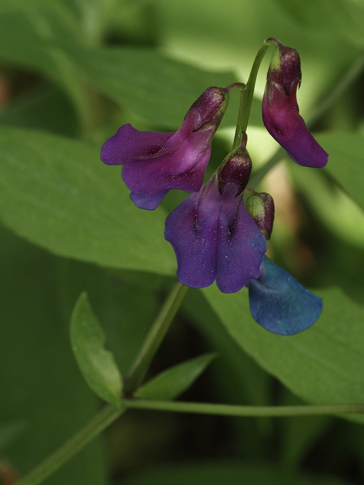
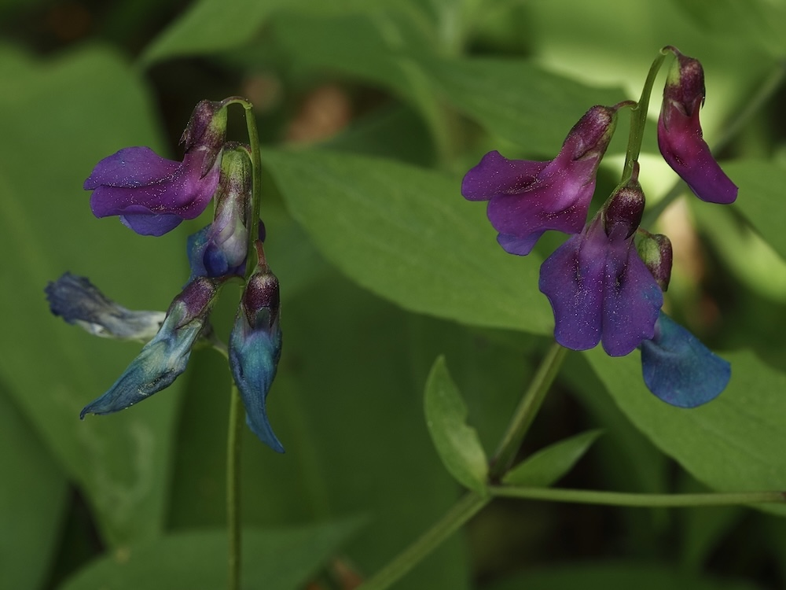

Schmetterlingsblüten im Frühlingswald – und eine Pflanze, die Farbe wechselt wie eine Ampel.



Die Farbampel für Hummeln
Rosa bedeutet für Hummeln: frisch, nektarreich – hier anhalten! Blauviolett bedeutet: schon bestäubt, weiterfliegen! Die Frühlings-Platterbse wechselt ihre Blütenfarbe nach der Bestäubung durch eine Änderung des pH-Werts im Zellsaft. Man kann an einer einzigen Pflanze beide Farben gleichzeitig sehen – ein perfektes Demonstrationsobjekt.
Kein Kletterer – eine Ausnahme in der Familie
Fast alle Platterbsen klettern mit Ranken. Die Frühlings-Platterbse nicht – ihre Blätter enden stumpf ohne Ranke. Sie hat sich dem Schattenleben angepasst: Das Lichtfenster vor dem Laubaustrieb reicht. Im Mai, wenn die Bäume das Licht abschneiden, zieht sie sich vollständig zurück.
Wissenswertes & Merksätze
Farbwechsel live zeigen
Rosa = jung und nektarreich. Blauviolett = besucht und leer. Beide Farben gleichzeitig an einer Pflanze – eine erlebbare Ökologie-Stunde.
Ohne Ranken
Als einzige heimische Platterbse ohne Ranken leicht zu bestimmen – alle anderen klettern.
Zeigerpflanze
Ihr Vorkommen zeigt alte, nährstoffreiche Laubwälder an – wo sie wächst, lohnt genaueres Hinschauen.